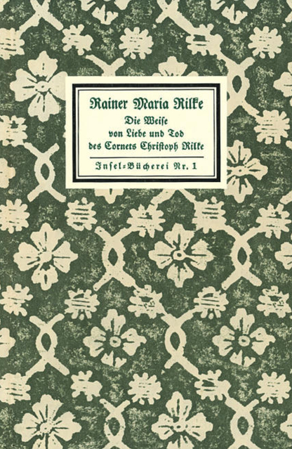

Stulecie Korneta
Przed ponad stu laty, w lipcu roku 1912, kierownik Insel Verlag Anton Kippenberg inicjuje jedną z najsłynniejszych serii wydawniczych, tzw. Insel-Bücherei. Wszystkie publikacje charakteryzuje niewielki, kieszonkowy format, twarda oprawa, wyszukana szata graficzna oraz typografia. Jako tom pierwszy serii ukazuje się Pieśń o miłości i śmierci korneta Krzysztofa Rilke.
Pierwsza redakcja Korneta powstała jesienią roku 1899, kiedy to „w ciągu jednej nocy, nie skreślając ani jednego słowa”, Rilke spisał liryczną prozą romantyczną historię młodego chorążego. „Przebywał wówczas w pewnej willi” – wspomina księżna Marie von Thurn und Taxis – „owej nocy nie mógł zasnąć. «Proszę spojrzeć, Księżno», powiedział, gdy staliśmy przy otwartym na oścież oknie, «była to noc jak ta, nieco burzliwa, rozświetlona blaskiem księżyca. Długie, wąskie pasma chmur, niczym ciemne wstęgi, przesuwały się spiesznie na tle lśniącej tarczy księżyca. Podszedłem do okna i spoglądałem na chmury, pędzące, jak te przed nami, po niebie – ich szybki rytm obudził pierwsze słowa utworu, którem bezwiednie nieomal wyszeptał: ‹Konno, konno, konno›... a potem zacząłem pisać, jakby w uniesieniu, pisałem noc całą. Rankiem ‹Kornet› był gotowy». I zakończył z dziecięcym uśmiechem, który rozjaśnił jego oblicze: «Poczułem błogość, byłem dumny jak paw, przekonany, iż ‹Kornet› ugruntuje moją sławę». (…) Słyszałam kilkakroć, jak Rilke recytował ten utwór. Czytał go z niezwykłą prostotą, delikatnie intonując rytm, czasem jak we śnie…”.
Utwór w ostatecznej, nieznacznie zmienionej wersji, jako tom nr 1 serii Insel-Bücherei, odniósł oszałamiający sukces, przechodzący najśmielsze oczekiwania autora. „Ależ zgotował Pan memu Kornetowi konną przejażdżkę” – pisał Rilke do Kippenberga w roku 1912, kiedy to w ciągu trzech pierwszych tygodni sprzedaży rozeszło się osiem tysięcy egzemplarzy. Do śmierci Rilkego w roku 1926 sprzedano ich ponad trzysta tysięcy, a w roku 1962 ich liczba przekroczyła milion.
Konno, konno, konno – tak przez dzień, tak przez noc, znów przez dzień.
Konno, konno, konno.